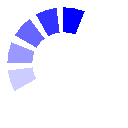

2026 FIFA ワールドカップ
本戦グループステージ抽選会
（シミュレーション）
- 抽選ルール
- ・開催国はグループA:メキシコ / B:カナダ / D:アメリカの1番目に固定
- ・ポット1から順に配置し、同一グループに 同じポットのチームが2つ以上入らない
- ・欧州（UEFA）は最大2チームまで、それ以外の大陸は最大1チームまで
- 説明書
- ・「抽選開始」を押すと抽選会シミュレーションがスタートします
- ・演出スキップに︎︎︎︎チェック︎︎︎︎☑︎を入れて「抽選開始」を押すと
アニメーションが省略され瞬時に結果を表示します - ・国名を押すとモーダルで情報表示します
- ・抽選終了後に「スクショ」ボタンと「シェア」ボタンが表示されます
- ・「スクショ」はお使いの端末の表示されている抽選結果を保存します
- ・「シェア」はシェア用に最適化した抽選結果を共有します
（XやLINEなどSNSへの共有や端末への保存も可能です）
本大会ポット分け（抽選用）
欧州プレイオフ&大陸間プレイオフはポット表タブで確認出来ます！
がんばれ！
ニッポン！
ニッポン！

抽選中
...
FIFA男子ワールドランキング (2025年11月19日更新)
Spainが1位を維持！Argentinaが2位。
トップ50を表示中。
| 順位 | 国旗 | 国名 | ポイント |
|---|---|---|---|
| 1 |  | スペイン | 1877.18 |
| 2 |  | アルゼンチン | 1873.33 |
| 3 |  | フランス | 1870 |
| 4 |  | イングランド | 1834.12 |
| 5 |  | ブラジル | 1760.46 |
| 6 |  | ポルトガル | 1760.38 |
| 7 |  | オランダ | 1756.27 |
| 8 |  | ベルギー | 1730.71 |
| 9 |  | ドイツ | 1724.15 |
| 10 |  | クロアチア | 1716.88 |
| 11 |  | モロッコ | 1713.12 |
| 12 |  | イタリア | 1702.06 |
| 13 |  | コロンビア | 1701.3 |
| 14 |  | アメリカ | 1681.88 |
| 15 |  | メキシコ | 1675.75 |
| 16 |  | ウルグアイ | 1672.62 |
| 17 |  | スイス | 1654.69 |
| 18 |  | 日本 | 1650.12 |
| 19 |  | セネガル | 1648.07 |
| 20 |  | イラン | 1617.02 |
| 21 |  | デンマーク | 1616.75 |
| 22 |  | 韓国 | 1599.45 |
| 23 |  | エクアドル | 1591.73 |
| 24 |  | オーストリア | 1585.51 |
| 25 |  | トルコ | 1582.69 |
| 26 |  | オーストラリア | 1574.01 |
| 27 |  | カナダ | 1559.15 |
| 28 |  | ウクライナ | 1557.47 |
| 29 |  | ノルウェー | 1553.14 |
| 30 |  | パナマ | 1540.43 |
| 31 |  | ポーランド | 1532.04 |
| 32 |  | ウェールズ | 1529.71 |
| 33 |  | ロシア | 1524.52 |
| 34 |  | エジプト | 1520.68 |
| 35 |  | アルジェリア | 1516.37 |
| 36 |  | スコットランド | 1506.77 |
| 37 |  | セルビア | 1506.34 |
| 38 |  | ナイジェリア | 1502.46 |
| 39 |  | パラグアイ | 1501.5 |
| 40 |  | チュニジア | 1497.13 |
| 41 |  | ハンガリー | 1496.29 |
| 42 |  | コートジボワール | 1489.59 |
| 43 |  | スウェーデン | 1487.13 |
| 44 |  | チェコ | 1487 |
| 45 |  | スロバキア | 1485.65 |
| 46 |  | ギリシャ | 1480.38 |
| 47 |  | ルーマニア | 1465.78 |
| 48 |  | ベネズエラ | 1465.22 |
| 49 |  | コスタリカ | 1464.24 |
| 50 |  | ウズベキスタン | 1462.03 |
データ：FIFA公式発表（2025年11月19日更新）
日本は18位（1698.45ポイント）・AFC最高位！
最新サッカーニュース
2026ワールドカップ・日本代表関連を中心に自動更新
ニュースを読み込み中...